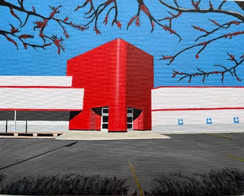

The Chicago Alliance of Visual Artists 2026 Annual Members Show
The Chicago Alliance of Visual Artists (CAVA) proudly announces its annual Member Show to be held for the first time at Mana Contemporary with works by artists aged 50 and older, on view March 1-28. The exhibition will be displayed in the 5th floor gallery space Monday through Friday 11:00 am to 5:00 pm.
Opening Reception — Saturday, March 7, 1-3:30pm
Presentation of Awards — 2pm
In addition, CAVA will host an artist talk at Mana Contemporary on Saturday, March 21, 1:30–3:30pm.
Admission is free and open to the public.
CAVA is anticipating a robust exhibition of 125 to 150 pieces of art representing our diverse and thriving membership. A variety of mediums will be included such as oil, acrylic, watercolor, and encaustic paintings, ceramics, photography, drawings, printmaking, collage, jewelry, and sculpture.